下图是《三维分子模型》的主菜单：
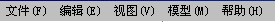
接着我们来介绍它们的功能。
当用鼠标点击选中
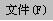
或按下“Alt + F”时，弹出下面的画面：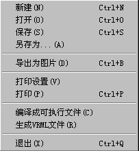
“新建”用于新建一个文件。当按下这个选项的时候，应用程序的所有设置都
恢复到默认状态，您可以从头来搭建一个分子模型。
“打开”用于打开一个已经存在的分子模型文件。应用程序自身携带了一些已
经搭建好的例子，都存放在“例子”目录下。
“保存”用于把已经搭建好的或者是未搭建完的模型保存为一个文件，方便于
您以后继续工作。
“另存为”用于把当前的文件另外保存起来。
“导出为图片”用于把分子模型以图片的方式保存起来，使您可以把它应用于
其他的场合。
“打印设置”用于设置打印机的相关属性。
“打印”用于把分子模型的图片在打印机上打印出来。
“编译成可执行文件”用于把做好的课件生成可以脱离平台独立运行的可执行
文件。
“生成VRML文件”用于把做好的课件生成可以在IE浏览器中浏览的虚拟现实网
页文件。需要提醒一下的是，要保证正确的浏览需要下载一个插件，这个插件
可以从本公司的网站上去下载。
“退出”退出应用程序。
当用鼠标点击选中
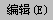
或按下“Alt + E”时，弹出下面的画面：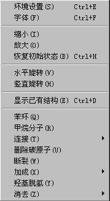
“环境设置”用来对工作区的环境进行设置，包括背景颜色，环境灯光，
照射灯光等因素。
因为分子模型在这个应用程序里是以三维的方式进行演示的，所以恰当的
背景及灯光设置可以带来更加的逼真效果。具体的设置窗体如下图：
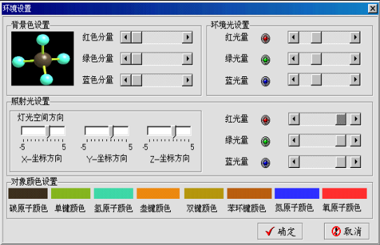
关于颜色：
在计算机里，人的眼睛看到的颜色是这样形成的：由标准的彩色显示器的三条
颜色枪按照一定的频率不间断的扫描显示器的屏幕，颜色枪射出的电子束撞击
屏幕上的不同的荧光体而使之发光，共有红、绿、蓝三种颜色的光。而人的眼
睛看到的颜色就是这三种颜色光的混合。
所以我们通过分别设置红色、绿色、蓝色的量来控制颜色。
可以看到，在窗体的左上部的背景色设置框内有三个滚动条分别被标记出
“红色分量”、“绿色分量”、“蓝色分量”，最左边表示这种颜色的
分量最小，最右边表示这种颜色的分量最大。您可以通过拖动滚动条来设置
，达到您想要的颜色。
关于光源：
程序里用一种近似的光照模型来模拟现实世界的光照效果。比如我们在一间
房子里面打开一盏白炽灯，那么房间里的大多数光线来自于该灯泡，其他的
光线是灯泡光线经过墙的若干次反射后形成的。另外，还有不是来自特定光
源的光线，我们称之为环境光。
我们的工作区就好比一个房间，有灯，有墙壁。
上面窗体右上部的环境光设置是用来设定环境光的。譬如，没有照明灯光的
情况下，如果有一些环境光的话，我们还是可以看到房间内的物体的。就好
象黄昏的没有开灯的房间里一样。同颜色的道理一样，我们还是通过设定三
种颜色光的分量来设定整个环境光的颜色以及亮度。
窗体中间的部分是用来设定照射灯的（就是那个灯泡）。除了像上面那样设
定它的颜色和亮度外，还可以设定灯光的空间位置，就好象我们可以把灯泡
挂在房间里任何我们喜欢的位置一样。其中X方向为屏幕上从左到右的方向
（屏幕的中心为坐标原点），Y方向为屏幕上从下到上的方向，Z方向为从里
到外的方向。
最下面的部分是对象颜色选择，点中相应的颜色框时，会有颜色对话窗体弹出。
“字体”用来选择在工作区内显示的字符的样式、大小、颜色等。
“缩小”、“放大”，顾名思义，它们是起放大和缩小视窗效果作用的。
“恢复初始状态”，恢复到未经任何旋转、缩放的状态。
“水平旋转”“竖直旋转”用于让工作区内的对象沿Y轴、X轴旋转。
“显示已有结构”显示模型库中的模型。
“苯环”、“甲烷分子”、“连接”、“删除碳原子”的功能同模板栏。
“断裂”用于使选中的σ键断裂。
“加成”用于对选中的C - C双键，C - O双键，C - C叁键进行加成。加成
的方式是可选的：
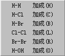
“羟基脱氢”用于对羟基进行脱氢。使用时首先选中羟基上的C - O单键，
按下这个选项就可以了。只有当和羟基连接的主链原子上有氢原子或卤素
原子或另外的羟基时，这个操作才是有效的。
“消去”用于消去所选中键上可以消去的原子，例如H-H、H-X、H-OH。
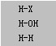
。当用鼠标点击选中
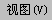
或按下“Alt + V”时，弹出下面的画面：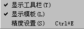
标有的表示该项属性已经打开，没有标记的表示该项属性是关闭着的。
“精度设置”用来对显示对象的精度进行设置。当显示的分子较大时，可
以使用这个功能进行调节，使显示不至于产生停顿。
当用鼠标点击选中
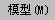
或“Alt + M”时，弹出下面的画面：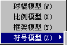
“球棍模型”表示工作区内的模型用球体来代表原子，用圆柱体来代表键
的模型。
“比例模型”表示工作区内的模型用球体的体积比来表示分子内原子的
体积比。
“框架模型”表示工作区内的模型只用线条来表示原子间所成的键。
“符号模型”除了用线条表示键之外，用元素符号来表示原子。它有两
个子选项：
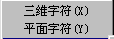
“三维字符”表示显示出来的元素符号是三维的，可以旋转、缩放。
“平面字符”表示显示出来的元素符号是平面的，不能旋转、缩放。
此外，还有一个选项，在这里可以选择“框架模型”和
“字符模型”中线条的宽度，共有以下的宽度可以选择：
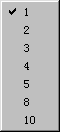
当点击
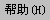
或按下“Alt + H”时，弹出 ，用于查看版本信息和打开帮助文件。